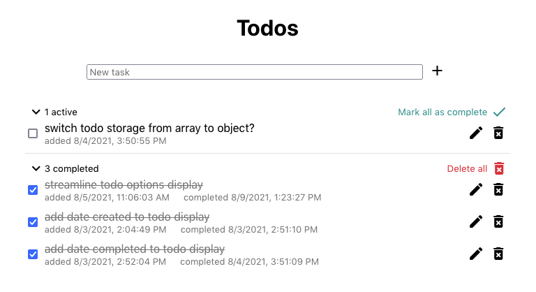
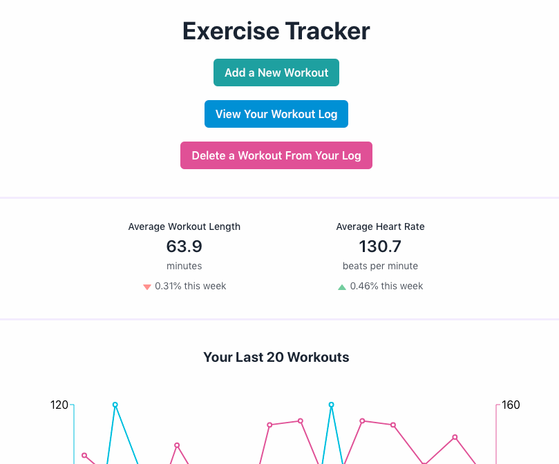
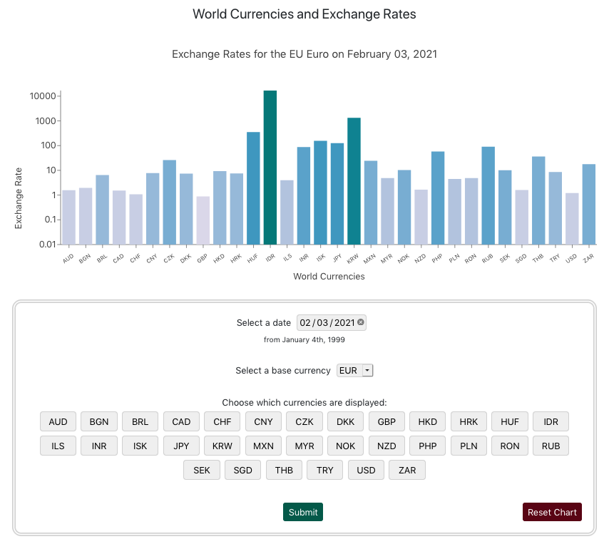
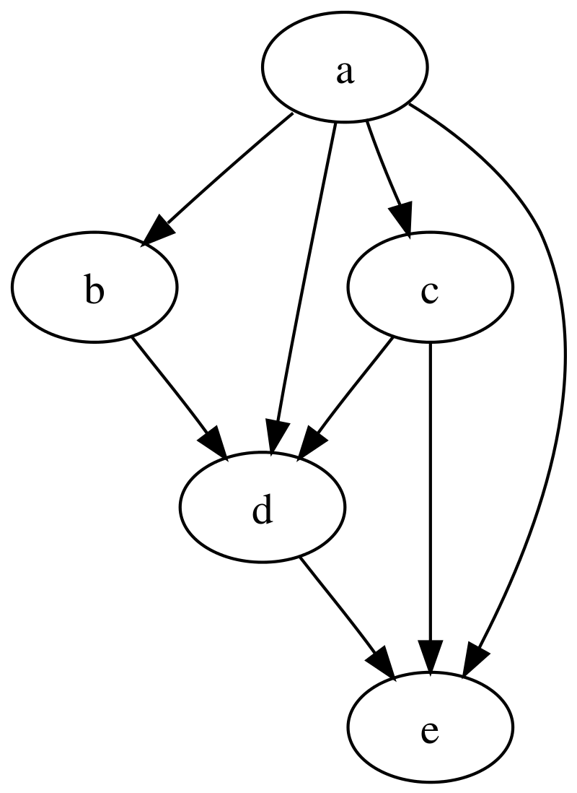

Projects
-
Todo App
A simple todo app.
This application is written in Typescript with React. The intuitive UI allows users to add tasks to their list and then edit, delete, and mark those tasks as completed. At a glance, users can see how many active and completed todo items they have. All active tasks can be marked as completed with a single button, and all completed tasks can be deleted with another.
 -
Exercise Tracker
A full-stack application in which users can record and view their workout data.
The front-end is written with React, utilizing only function components. Data visualizations created with Recharts give users a better understanding of their progress and help identify trends. Cohesive components styled with Chakra UI allow for a flexible User Experience.
The back-end is a Node.js API with endpoints connecting to a SQLite database file. Documentation allows users to connect their own client to the server if desired.
 -
World Currencies and Exchange Rates
An application displaying current and historical currency exchange rates.
Built with React, this application provides an interactive User Experience. With exchangerate.host supplying accurate data from as early as 1999, users have access to snapshots of the global economy at any point in library, can be adjusted to show any available currency as the base for exchange rates. The currencies displayed can also be narrowed down for clearer, uncluttered comparisons.
 -
Sniffr
A social media platform for pups.
This platform is designed as a space in which dogs can share the latest news (smells) and engage with each other through reactions appropriate for pups. Views are created in Pug, and with the help of Bootstrap, a masonry style card layout displays user-created content in an efficient and aesthetically pleasing manner. Custom UI elements, including animations, were designed to enhance the playful tone of the website.
The back end of this application is written in NodeJS using the Express framework. User and post data are stored in MongoDB Atlas. Authentication and authorization controls are implemented with Passport to ensure users have control over the items they create.

-
Data Structures & Algorithms Library
A library for storing and sorting data efficiently.
A fully tested library featuring the following data structures and algorithms:
- Node
- Linked List
- Doubly Linked List
- Queue
- Stack
- Tree
- Binary Search Tree
- Min Heap
- Priority Queue
- Graph
- Bubble Sort
- Merge Sort
- Quick Sort
